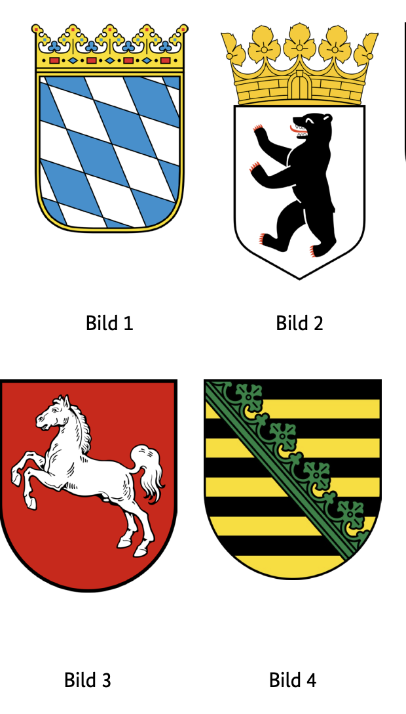
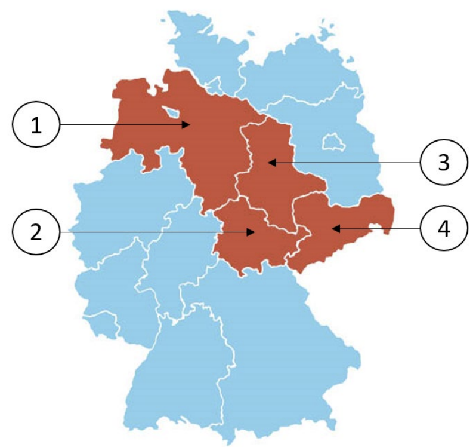

Resmi BAMF soru havuzundaki 10 Sachsen (SN) eyalet sorusunun Almanca ve Türkçe açıklamalı interaktif çözümleri. Soru üzerine tıklayarak bilginizi anında test edin.
Almanya vatandaşlık ve kalıcı oturum için yapılan Leben in Deutschland (LiD) sınavında adaya toplam 33 çoktan seçmeli soru sorulur:
30 Genel Soru: Demokrasi, hukuk, tarih ve toplumsal yaşam (300 genel soru havuzundan).
3 Eyalet Sorusu: İkamet ettiğiniz eyalete özel tarih, coğrafya ve anayasa soruları (Aşağıdaki 10 eyalet sorusu havuzundan).
Sınavı geçmek için 33 sorudan en az 15 doğru (Vatandaşlık şartı) veya 17 doğru (Oryantasyon kursu başarı sertifikası) yapmanız gerekmektedir.
📝 10 Resmi Sachsen Sorusunu Çözün
Soru #421 (1 / 10)Federal Eyalet: Sachsen
Welches Wappen gehört zum Freistaat Sachsen?
TR: Hangi arma Saksonya Özgür Devleti'ne aittir?

✅ Doğru Cevap: Şık D (Bild 4)
Bu görev Alman federal eyaletlerinin armalarıyla ilgilidir. 1'den 4'e kadar numaralı birkaç arma gösterilecek. Her arma farklı bir federal eyalete aittir. Göreviniz, Saksonya Özgür Devleti'ne atayılmış armayı tanımak ve ona uygun numarayı seçmektir. Sakson armasının sembolleri, renkleri ve tipik özellikleri hakkında bilgi, doğru kararı vermenize yardımcı olacaktır.
In dieser Aufgabe geht es um Landeswappen der deutschen Bundesländer. Dir werden mehrere Wappen mit den Nummern 1 bis 4 angezeigt. Jedes Wappen gehört zu einem anderen Bundesland. Deine Aufgabe ist es, das Wappen zu erkennen, das dem Freistaat Sachsen zugeordnet ist, und die entsprechende Nummer auszuwählen. Kenntnisse über Symbole, Farben und typische Merkmale des sächsischen Wappens helfen bei der richtigen Entscheidung.
This task is about the coats of arms of the German federal states. You will be shown several coats of arms with the numbers 1 to 4. Each coat of arms belongs to a different federal state. Your task is to recognize the coat of arms assigned to the Free State of Saxony and select the corresponding number. Knowledge of symbols, colours and typical features of the Saxon coat of arms will help you make the right decision.
هذه المهمة تتعلق بشعارات الولايات الفيدرالية الألمانية. ستعرض لك عدة شعارات بالنبالة تحمل الأرقام من 1 إلى 4. كل شعار نبالة ينتمي إلى ولاية فيدرالية مختلفة. مهمتك هي التعرف على شعار النبالة المخصص لدولة ساكسونيا الحرة واختيار الرقم المناسب. معرفة الرموز والألوان والخصائص النموذجية لشعار الساكسونيين ستساعدك على اتخاذ القرار الصحيح.
Це завдання стосується гербів федеральних земель Німеччини. Вам покажуть кілька гербів із цифрами від 1 до 4. Кожен герб належить різній федеральній землі. Ваше завдання — визнати герб, присвоєний Вільній землі Саксонія, і вибрати відповідний номер. Знання символів, кольорів і типових рис саксонського герба допоможе вам прийняти правильне рішення.
Soru #422 (2 / 10)Federal Eyalet: Sachsen
Welches ist ein Landkreis in Sachsen?
TR: Saksonya'da hangi bir ilçe nedir?
✅ Doğru Cevap: Şık A (Vogtlandkreis)
Aşağıdaki soru, Alman federal eyaletleri ve onların idari birimlerine atıfta bulunmaktadır. Almanya'da kırsal bölgeler, her biri belirli bir federal eyalete ait önemli bölgesel idari birimlerdir. Saksonya, bu federal eyaletlerden biridir. Doğru cevabı bulmak için, bahsedilen bölgelerden hangilerinin aslında Saksonya eyaletinde olduğunu ve hangilerinin diğer federal eyaletlere ait olduğunu bilmek faydalı olacaktır.
Die folgende Frage bezieht sich auf die deutschen Bundesländer und deren Verwaltungseinheiten. In Deutschland sind Landkreise wichtige regionale Verwaltungseinheiten, die jeweils zu einem bestimmten Bundesland gehören. Sachsen ist eines dieser Bundesländer. Um die richtige Antwort zu finden, ist es hilfreich zu wissen, welche der genannten Landkreise tatsächlich im Bundesland Sachsen liegt und welche zu anderen Bundesländern gehören.
The following question refers to the German federal states and their administrative units. In Germany, rural districts are important regional administrative units, each of which belongs to a specific federal state. Saxony is one of these federal states. In order to find the right answer, it is helpful to know which of the districts mentioned is actually in the state of Saxony and which belong to other federal states.
السؤال التالي يشير إلى الولايات الفيدرالية الألمانية ووحداتها الإدارية. في ألمانيا، تعد المناطق الريفية وحدات إدارية إقليمية مهمة، وكل منها ينتمي إلى ولاية اتحادية محددة. ساكسونيا هي واحدة من هذه الولايات الفيدرالية. لإيجاد الإجابة الصحيحة، من المفيد معرفة أي من المناطق المذكورة تقع فعليا ضمن ولاية ساكسونيا وأيها تنتمي إلى ولايات اتحادية أخرى.
Наступне питання стосується німецьких федеративних земель та їхніх адміністративних одиниць. У Німеччині сільські райони є важливими регіональними адміністративними одиницями, кожна з яких належить до певної федеральної землі. Саксонія — одна з таких федеральних земель. Щоб знайти правильну відповідь, корисно знати, які з згаданих округів насправді належать до землі Саксонія, а які — до інших федеральних земель.
Soru #423 (3 / 10)Federal Eyalet: Sachsen
Für wie viele Jahre wird der Landtag in Sachsen gewählt?
TR: Saksonya'daki eyalet parlamentosu kaç yıl boyunca seçilecek?
✅ Doğru Cevap: Şık C (5)
Bağlam: Soru, Almanya'daki Saksonya Özgür Devleti'nin siyasi sistemiyle ilgilidir. Eyalet parlamentosu eyalet parlamentosudur ve düzenli aralıklarla yeniden seçilir. Sorun, yasama döneminin uzunluğu, yani Saksonya eyalet parlamentosu üyelerinin seçildiği yıl sayısıyla ilgilidir.
Der Kontext: Die Frage bezieht sich auf das politische System des Freistaates Sachsen in Deutschland. Der Landtag ist das Landesparlament und wird in regelmäßigen Abständen neu gewählt. Gefragt wird nach der Länge der Legislaturperiode, also der Anzahl der Jahre, für die die Abgeordneten des sächsischen Landtags gewählt werden.
The context: The question relates to the political system of the Free State of Saxony in Germany. The state parliament is the state parliament and is re-elected at regular intervals. The question is about the length of the legislative period, i.e. the number of years for which the members of the Saxon state parliament are elected.
السياق: السؤال يتعلق بالنظام السياسي لولاية ساكسونيا الحرة في ألمانيا. البرلمان الحكومي هو البرلمان المحلي ويعاد انتخابه على فترات منتظمة. السؤال يتعلق بمدة الفترة التشريعية، أي عدد السنوات التي ينتخب فيها أعضاء برلمان ولاية ساكسونيا.
Контекст: Питання стосується політичної системи Вільної землі Саксонія в Німеччині. Державний парламент є парламентом штату і переобирається з регулярними інтервалами. Питання стосується тривалості законодавчого періоду, тобто кількості років, на які обираються члени саксонського земельного парламенту.
Soru #424 (4 / 10)Federal Eyalet: Sachsen
Ab welchem Alter darf man in Sachsen bei Kommunalwahlen wählen?
TR: Saksonya'da yerel seçimlerde hangi yaştan oy verebilirsiniz?
?
✅ Doğru Cevap: Şık C (18)
Almanya'daki hayat için önemli bir soru
Wichtige Frage für das Leben in Deutschland
Important question for life in Germany
سؤال مهم للحياة في ألمانيا
Важливе питання для життя в Німеччині
Soru #425 (5 / 10)Federal Eyalet: Sachsen
Welche Farben hat die Landesflagge von Sachsen?
TR: Saksonya devlet bayrağı hangi renklere sahip?
✅ Doğru Cevap: Şık B (weiß-grün)
Soru, Alman federal eyaletleri ve sembolleri hakkında bilgi sahibidir. Odak noktası Saksonya Özgür Devleti ve onun devlet bayrağı üzerindedir. Saksonya bayrağına resmi olarak ait olan renkleri belirlemek için çeşitli renk kombinasyonları kullanılır. Bu tür sorular genel bilgi, coğrafya veya siyasi eğitim için tipiktir.
Die Frage bezieht sich auf die Kenntnis deutscher Bundesländer und ihrer Symbole. Im Fokus steht der Freistaat Sachsen und seine Landesflagge. Anhand mehrerer Farbkombinationen soll erkannt werden, welche Farben offiziell zur Flagge Sachsens gehören. Solche Fragen sind typisch für Allgemeinwissen, Geografie oder politische Bildung.
The question refers to the knowledge of German federal states and their symbols. The focus is on the Free State of Saxony and its state flag. Several colour combinations are used to identify which colours officially belong to the flag of Saxony. Such questions are typical of general knowledge, geography or political education.
السؤال يتعلق بمعرفة الولايات الفيدرالية الألمانية ورموزها. يركز الفيلم على ولاية ساكسونيا الحرة وعلمها الحكومي. تستخدم عدة تركيبات ألوان لتحديد الألوان التي تنتمي رسميا إلى علم ساكسونيا. مثل هذه الأسئلة نموذجية للمعرفة العامة أو الجغرافيا أو التعليم السياسي.
Питання стосується знань про німецькі федеративні землі та їхні символи. Основна увага приділяється Вільній землі Саксонії та її прапору землі. Використовуються кілька кольорових комбінацій для ідентифікації, які кольори офіційно належать прапору Саксонії. Такі питання є типовими для загальної освіти, географії чи політичної освіти.
Soru #426 (6 / 10)Federal Eyalet: Sachsen
Wo können Sie sich in Sachsen über politische Themen informieren?
TR: Saksonya'daki siyasi konuları nereden öğrenebilirsiniz?
?
✅ Doğru Cevap: Şık A (bei der Landeszentrale für politische Bildung)
Almanya'daki hayat için önemli bir soru
Wichtige Frage für das Leben in Deutschland
Important question for life in Germany
سؤال مهم للحياة في ألمانيا
Важливе питання для життя в Німеччині
Soru #427 (7 / 10)Federal Eyalet: Sachsen
Die Landeshauptstadt von Sachsen heißt …
TR: Saksonya eyalet başkenti ...
✅ Doğru Cevap: Şık B (Dresden)
Bu soru, Almanya'daki federal eyaletler hakkındaki siyasi ve coğrafi bilgiye atıfta bulunur. Her federal eyaletin kendi eyalet başkenti vardır ve hükümet ile idari burada bulunur. Saksonya Özgür Devleti örneğinde, hangi şehrin bu merkezi işlevi üstleneceği bilinip bilinmediği incelenecektir.
Diese Frage bezieht sich auf das politische und geografische Wissen über die Bundesländer in Deutschland. Jedes Bundesland besitzt eine eigene Landeshauptstadt, in der sich Regierung und Verwaltung befinden. Am Beispiel des Freistaates Sachsen soll geprüft werden, ob bekannt ist, welche Stadt diese zentrale Funktion übernimmt.
This question refers to the political and geographical knowledge about the federal states in Germany. Each federal state has its own state capital, in which the government and administration are located. Using the example of the Free State of Saxony, it will be examined whether it is known which city will take on this central function.
يشير هذا السؤال إلى المعرفة السياسية والجغرافية حول الولايات الفيدرالية في ألمانيا. لكل ولاية اتحادية عاصمة ولاية خاصة بها، حيث تقع الحكومة والإدارة. باستخدام مثال ولاية ساكسونيا الحرة، سيتم فحص ما إذا كان من المعروف أي مدينة ستتولى هذه الوظيفة المركزية.
Це питання стосується політичних і географічних знань про федеративні землі в Німеччині. Кожна федеральна земля має власну столицю штату, в якій розташовані уряд і адміністрація. Використовуючи приклад Вільної землі Саксонія, буде досліджено, чи відомо, яке місто виконуватиме цю центральну функцію.
Soru #428 (8 / 10)Federal Eyalet: Sachsen
Welches Bundesland ist Sachsen?
TR: Saksonya hangi federal eyalet?

✅ Doğru Cevap: Şık D (4)
Soru, Almanya'nın 16 federal eyaletten oluşan federal sistemine atıfta bulunuyor. Her federal eyaletin, sunulma şekline bağlı olarak kullanılabilecek belirli bir sayı veya pozisyonu vardır; örneğin diyagramlarda, haritalarda veya sınavlarda. Doğru cevabı bulmak için, Saksonya'nın hangi federal eyalet olduğunu ve ilgili bağlamda hangi numaranın ona atandığını bilmeniz gerekir.
Die Frage bezieht sich auf das föderale System Deutschlands, das aus 16 Bundesländern besteht. Jedes Bundesland hat eine bestimmte Nummer oder Position, die je nach Darstellung, zum Beispiel in Diagrammen, Karten oder Prüfungen, verwendet werden kann. Um die richtige Antwort zu finden, muss man wissen, welches Bundesland Sachsen ist und welche Nummer ihm im jeweiligen Zusammenhang zugeordnet wird.
The question refers to Germany's federal system, which consists of 16 federal states. Each federal state has a specific number or position that can be used depending on how it is presented, for example in diagrams, maps or exams. In order to find the right answer, you have to know which federal state Saxony is and which number is assigned to it in the respective context.
يشير السؤال إلى النظام الفيدرالي الألماني، الذي يتكون من 16 ولاية اتحادية. لكل ولاية فيدرالية رقم أو منصب محدد يمكن استخدامه حسب طريقة تقديمه، مثل الرسوم التوضيحية أو الخرائط أو الامتحانات. لكي تجد الإجابة الصحيحة، عليك أن تعرف أي ولاية اتحادية هي ساكسونيا وأي رقم مخصص لها في السياق المعني.
Питання стосується федеральної системи Німеччини, яка складається з 16 федеральних земель. Кожна федеральна земля має певну кількість або позицію, яку можна використовувати залежно від того, як вона подається, наприклад, у схемах, картах або іспитах. Щоб знайти правильну відповідь, потрібно знати, яка федеральна земля Саксонія є і який номер їй присвоєний у відповідному контексті.
Soru #429 (9 / 10)Federal Eyalet: Sachsen
Wie nennt man die Regierungschefin / den Regierungschef in Sachsen?
TR: Hükümet başkanına ne diyorsunuz?
Saksonya mı?
✅ Doğru Cevap: Şık D (Ministerpräsidentin / Ministerpräsident)
Almanya'daki hayat için önemli bir soru
Wichtige Frage für das Leben in Deutschland
Important question for life in Germany
سؤال مهم للحياة في ألمانيا
Важливе питання для життя в Німеччині
Soru #430 (10 / 10)Federal Eyalet: Sachsen
Welche Ministerin / welchen Minister hat Sachsen nicht?
TR: Saksonya'da hangi bakan yok?
✅ Doğru Cevap: Şık B (Außenministerin / Außenminister)
Almanya'da siyasi sorumluluk federal hükümet ile federal eyaletler arasında bölünür. Her federal eyaletin, örneğin Saksonya'nın, belirli sorumluluk alanları için farklı bakanlıkları olan kendi eyalet hükümeti vardır. Ancak, tüm politika alanları eyalet hükümetlerinin sorumluluğunda değildir; bazıları ise federal hükümetin tek sorumluluğunda. Soruya cevap vermek için, hangi bakanlıkların genellikle eyalet düzeyinde var olduğunu ve hangi görevlerin sadece federal düzeyde yapıldığını bilmek gerekir.
In Deutschland ist die politische Zuständigkeit zwischen Bund und Bundesländern aufgeteilt. Jedes Bundesland, wie Sachsen, hat eine eigene Landesregierung mit verschiedenen Ministerien für bestimmte Aufgabenbereiche. Allerdings sind nicht alle Politikfelder Sache der Landesregierungen; einige liegen ausschließlich in der Verantwortung des Bundes. Um die Frage zu beantworten, sollte man wissen, welche Ministerien typischerweise auf Landesebene existieren und welche Aufgaben nur auf Bundesebene wahrgenommen werden.
In Germany, political responsibility is divided between the federal government and the federal states. Each federal state, such as Saxony, has its own state government with different ministries for certain areas of responsibility. However, not all policy areas are the responsibility of the state governments; some are the sole responsibility of the federal government. To answer the question, one should know which ministries typically exist at the state level and which tasks are only performed at the federal level.
في ألمانيا، تنقسم المسؤولية السياسية بين الحكومة الفيدرالية والولايات الفيدرالية. كل ولاية اتحادية، مثل ساكسونيا، لديها حكومتها الخاصة مع وزارات مختلفة لمجالات معينة من المسؤوليات. ومع ذلك، ليست كل مجالات السياسات من مسؤولية حكومات الولايات؛ بعضها تقع على عاتق الحكومة الفيدرالية وحدها. للإجابة على السؤال، يجب معرفة أي الوزارات عادة ما توجد على مستوى الولايات وأي المهام تنفذ فقط على المستوى الفيدرالي.
У Німеччині політична відповідальність поділена між федеральним урядом і федеральними землями. Кожна федеральна земля, наприклад Саксонія, має власний уряд землі з різними міністерствами для певних сфер відповідальності. Однак не всі політичні сфери перебувають у відповідальності урядів штатів; деякі з них є виключною відповідальністю федерального уряду. Щоб відповісти на питання, слід знати, які міністерства зазвичай існують на рівні штатів, а які завдання виконуються лише на федеральному рівні.
300 Genel Soruyu ve Eyalet Sorularını Eksiksiz Çalışın
DeutschLernen LiD Trainer'da tüm 310 soruyu 5 farklı dilde (Türkçe, İngilizce, Arapça, Ukraynaca, Almanca) çözebilir, deneme sınavı simülasyonu yapabilirsiniz.